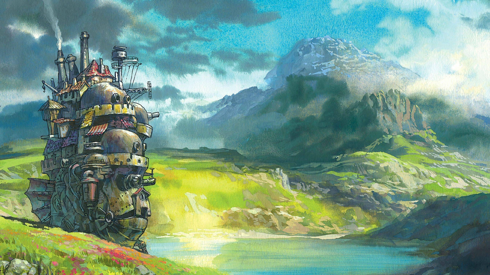
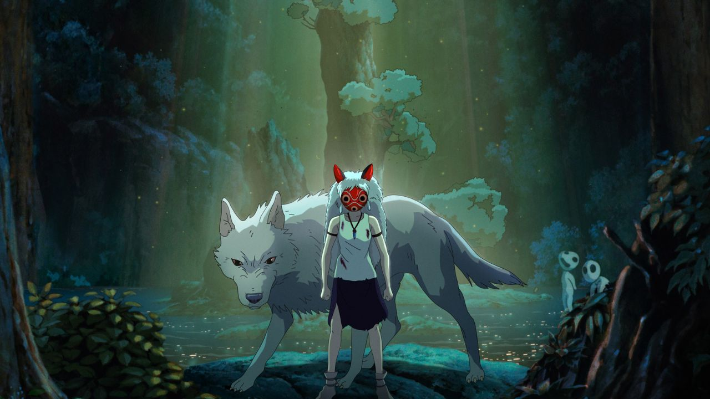

Studio Ghibli: Magia e Tradição Japonesa
O Studio Ghibli é um estúdio japonês de animação conhecido mundialmente por seus filmes encantadores, ricos em cultura, sensibilidade e críticas sociais. Abaixo, conheça três de suas obras mais populares:
A Viagem de Chihiro
Lançado em 2001, conta a história de uma garota que entra em um mundo mágico para salvar seus pais. Ganhou o Oscar de Melhor Animação.

O Castelo Animado
Dirigido por Hayao Miyazaki, narra a jornada de Sophie, uma jovem que é amaldiçoada e se transforma em uma idosa, e encontra abrigo no misterioso castelo de Howl.
Princesa Mononoke
Uma poderosa história sobre o conflito entre a natureza e a tecnologia. Apresenta Ashitaka, um jovem guerreiro, e San, uma humana criada por lobos.
